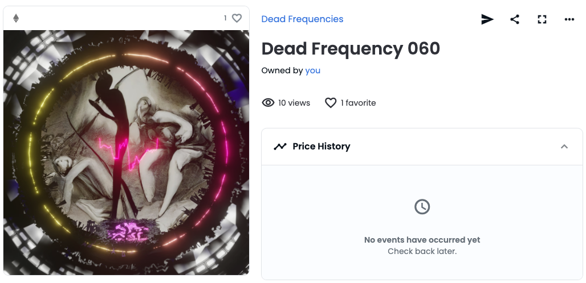

WIEN'S BLOG
My thoughts, written with a grain of salt

Do Artificial Intelligence Dream of Renaissance Art?
A short reflection on AI Art Jan 1, 2023
Recently, I was gifted my first digital art piece backed on the blockchain by a friend I met online. I was offered any piece to choose from, and it took me some time to find the one that spoke to me the most. The collection, titled " Dead Frequencies," had been very thought-provoking, and inspired me to write this article.

Talking about AI-generated Art opens many cans of worms, including concerns about climate change and sustainability, arguments over the authenticity of Art itself, and cultural debates about what can be considered Art. Here, I would like to focus on whether AI-generated Art can be regarded as Art.
Contrary to my previous understanding of AI art - which I had assumed involved simply inputting a prompt and having the AI generate a piece of Art in the desired style - I was intrigued by how Dead Frequencies had been produced. The artist, AeonSmash, used images generated by Dall.E, and then categorised each image into different properties based on its unique characteristics. Dead Frequencies is exceptionally provocative because all AI is trained using existing data. As a result, I saw Dead Frequencies as a panorama of our greatest fears, drawn from our past, present, and possible futures. It reminds me of our mortality each time I look at it.
The question of what can be considered Art has long been debated, and it is particularly relevant to AI art. While contemplating this blog post, I was reminded of a novel I read long ago: "Do Androids Dream of Electric Sheep?" by Philip K. Dick. The novel's main characters are Androids, designed to be almost indistinguishable from humans. One of the central themes is the extent to which they can think, feel, and experience the world in the same way as humans. In fact, the Androids have even been portrayed to be more human than the human protagonists. This raises an interesting question: could we consider AI art to capture more about human nature than humans can? Does AI provide a more precise reflection of humanity than we can ourselves?
I cheekily borrowed the title of my blog post from "Do Androids Dream of Electric Sheep?", and swapped the electric sheep for Renaissance art. In the book, the ownership of real animals, such as sheep, is desirable as it provides a sense of status in the dystopian world. The title becomes provocative, then, as it raises the question of whether androids dream about such ownership.
"Nothing could be more impolite. To say, 'Is your sheep genuine?' would be a worse breach of manners than to inquire whether a citizen's teeth, hair, or internal organs would test out authentic."
- Do Androids Dream of Electric Sheep?
Philip K. Dick
I chose Renaissance art as my electric sheep because many artists during that time were concerned with depicting the human form and human emotions in their work. They were also interested in exploring the inner life of their subjects and the psychological states and feelings that drove their actions. As such, Renaissance art can be seen as an expression of the humanist ideals of the time, which strongly emphasised the inherent value and dignity of the individual. Many Renaissance artists were interested in exploring the full range of human emotions and experiences. Their works continue to be valued for their beauty and emotional depth. I wonder if AI art can capture these humanistic behaviours and concerns in this context.
AI-generated Art engages with technologies such as neural networks, generative models, and evolutionary algorithms, raising questions about the extent to which it is truly capable of creating something new and original or whether it is simply following a set of predetermined rules. Some argue that because AI lacks consciousness, it cannot produce Art the same way a human artist can. As such, AI is commonly seen as a tool or collaborator that enables artists to create new and unique works of Art.
In this blog post, I have attempted to delve into the ethical concerns surrounding AI art and explore some of the social and cultural implications of using AI in the art world. I hope that this piece will inspire some reflection and critical thinking the next time you encounter AI-generated art.
As someone working in the field of communication and cultural studies, I am fascinated by the potential of AI art to challenge and expand our understanding of what it means to create and experience art. It is an exciting and rapidly evolving field, and I am eager to see how it will continue to shape the art world in the coming years.

About me
Hi there! My name is Wi En and I use she/her pronouns. I am currently pursuing my Master's degree in Communication and New Media at the National University of Singapore, where I recently earned my Bachelor's degree in Social Sciences (Hons). My research interests revolve around the impact of media technology on our daily lives and how it shapes the way we communicate. In my Bachelor's thesis, I explored how elderlies in Singapore navigate the rapidly changing digital landscape. Currently, I am studying gender representations in the metaverse and the role of virtual fashion in the construction and deconstruction of gender and gendered differences. When I'm not busy with my studies, I enjoy indulging in science fiction novels and testing the limits of my spice tolerance. Travel is a big passion of mine, and I'm always dreaming of my next destination. I am a hard-working and dedicated individual with a strong curiosity about the world around me. I hope to make a positive impact with my research and continue learning and growing throughout my career.
Recent Posts
-
Do Artificial Intelligence Dream of Renaissance Art?
A short reflection on AI Art